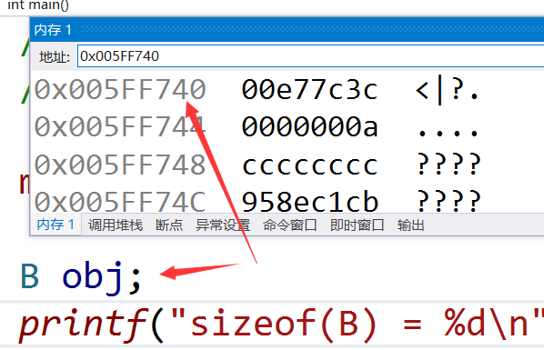

class A {public: A() { printf("A constructor\n"); }};class B {public: B() { printf("B constructor\n"); }};class C {public: // 构造函数的调用时机 类对象创建的时候 B m_objB; C(){printf("C constructor\n");} A m_objA;};int main(){ C obj; return 0;}class A {public: A() { printf("A constructor\n"); } ~A(){printf("A destructor\n");}};class B {public: B() { printf("B constructor\n"); } ~B() { printf("B destructor\n"); }};class C {public: // 构造函数的调用时机 类对象创建的时候 B m_objB; C(){printf("C constructor\n");} ~C() { printf("C destructor\n"); } A m_objA;};int main(){ C obj; return 0;}类与C++的结构体的区别
只有1个区别：默认访问权限
类的默认访问权限（不写的时候的访问权限）：private
结构体：public
类与c的结构体的区别
C有权限控制符吗：没有
C的结构体有函数吗：没有派生与继承
- 派生
class CStu {public:// sizeof(CStu) == 16 char m_name[10];// 姓名 int m_nGrade;// 年级};// 继承方式：public protected privateclass CTec:public CStu // 把CStu的所有成员全部继承过来{public:// sizeof(CTec) == 20; int m_nSalary;// 薪资};
- 派生后的访问权限
class CStu {public: int m_nNumA;protected: int m_nNumB;private: int m_nNumC;};// 继承方式：public protected privateclass CTec1:public CStu // 把CStu的所有成员全部继承过来{//public: int m_nNumA;//protected: int m_nNumB;//private: int m_nNumC;};class CTec2 :private CStu{//private: int m_nNumA;//private: int m_nNumB;//private: int m_nNumC;};class CTec3 :protected CStu{//protected: int m_nNumA;//protected: int m_nNumB;//private: int m_nNumC;};
- 有public以另一个为准
- 有private就是private
- protected和protected就是protected
基类的原生权限 继承方式 在子类中的最终权限 子类能否使用 类外能否使用 能否变更权限 public public public 能 能 能 public protected protected 能 不能 能 public private private 能 不能 能 protected public protected 能 不能 能 protected protected protected 能 不能 能 protected private private 能 不能 能 private public private 不能 不能 不能 private protected private 不能 不能 不能 private private private 不能 不能 不能
- 三种成员以public方式继承
class CStu {public: int m_nNumA;protected: int m_nNumB;private: int m_nNumC;};class CTec1:public CStu{ //public: int m_nNumA; //protected: int m_nNumB; //private: int m_nNumC;public: void Fun() { // m_nNumB最终为保护成员，可以在类内部使用 printf("%d", m_nNumB); // m_nNumC是基类的私有成员，只有基类可以使用 printf("%d", m_nNumC);// error }};int main(){ CTec1 obj; // obj可以在类外使用的成员 obj.m_nNumA; // m_nNumB为保护成员，不能在类外使用 obj.m_nNumB;// error // m_nNumC为基类的私有成员，只能在基类内部使用 obj.m_nNumC;// error return 0;}
- 三种成员以protected方式继承
class CStu {public: int m_nNumA;protected: int m_nNumB;private: int m_nNumC;};class CTec1:protected CStu{ //protected: int m_nNumA; //protected: int m_nNumB; //private: int m_nNumC;public: void Fun() { // m_nNumB最终为保护成员，可以在类内部使用 printf("%d", m_nNumB); // m_nNumC是基类的私有成员，只有基类可以使用 printf("%d", m_nNumC);// error }};int main(){ CTec1 obj; // m_nNumA为保护成员，不能在类外使用 obj.m_nNumA;// error // m_nNumB为保护成员，不能在类外使用 obj.m_nNumB;// error // m_nNumC为基类的私有成员，只能在基类内部使用 obj.m_nNumC;// error return 0;}
- 三种成员以private方式继承
class CStu {public: int m_nNumA;protected: int m_nNumB;private: int m_nNumC;};class CTec1:private CStu{ //private: int m_nNumA; //private: int m_nNumB; //private: int m_nNumC;public: void Fun() { // m_nNumA、m_nNumB最终为我的私有成员，可以在类内部使用 printf("%d", m_nNumB); // m_nNumC是基类的私有成员，只有基类可以使用 printf("%d", m_nNumC);// error }};int main(){ CTec1 obj; // m_nNumA为私有成员，不能在类外使用 obj.m_nNumA;// error // m_nNumB为私有成员，不能在类外使用 obj.m_nNumB;// error // m_nNumC为基类的私有成员，只能在基类内部使用 obj.m_nNumC;// error return 0;}
- 权限改变
class CStu {public: int m_nNumA;protected: int m_nNumB;private: int m_nNumC;};class CTec1:private CStu{ //private: int m_nNumA; //private: int m_nNumB; //private: int m_nNumC;public: // m_nNumA变成我的私有成员了，是我让变的 // 所以我可以改变其访问权限 // 在对应权限(public)下加声明，就可以改变其访问权限 CStu::m_nNumA; // m_nNumC的私有属性是基类赋予的，我无力改变 CStu::m_nNumC;};派生类的构造与析构函数调用顺序
- 构造：先调用基类的，再调用成员变量的，最后调用自己的
- 析构：与构造函数调用顺序相反
class A {public: A() { printf("A constructor\n"); } int m_nNumA;};class CBase {public: int m_nNumB; CBase() { printf("B constructor\n"); }};class CDerived:public CBase {public: CDerived() { printf("C constructor\n"); } A m_obj; int m_nNumC;};int main(){ CDerived obj; return 0;}成员函数重定义
class A {public: void Fun(){ printf("我是类A的Fun"); }};class B:public A{public: void Fun() { printf("我是类B的Fun"); }};int main(){ B obj; obj.Fun();// printf("我是类B的Fun"); obj.A::Fun();// printf("我是类A的Fun"); return 0;}class A {public: void Fun(){ printf("我是类A的Fun"); }};class B:public A{public: // 重定义，覆盖A中Fun的定义，B的对象不能直接访问A中的Fun // 要想使用，需加作用域限定符A::Fun() // 重定义和重载的区别 // A中的Fun和B中的两个Fun都构成重定义 // B中的两个Fun是重载 // 重定义：只要作用域不同，函数名相同，就构成重定义 // 重载：作用域相同，函数名相同，参数的顺序、类型、个数有1个不同就构成重载 void Fun(int a) { A::Fun(); printf("我是类B的有参Fun"); } void Fun() { printf("我是类B的无参Fun"); }};
- 调用基类的构造函数初始化基类成员
class A {public: int m_nNumA; A(int a):m_nNumA(a){}};class B:public A{public: int m_nNumB; // A中的m_nNumA继承给B了，B怎么初始化它 B(int a) // 调用基类的构造函数，初始化从基类中继承过来的成员 m_nNumA(a)这样写是错的 :A(a) { m_nNumA = 10;// 不是这个，这叫赋值 }};多继承
- 每个类的成员单独继承，可以分别以不同方式继承基类，每个基类用"，"隔开
class A1 {public: int m_nNumA1;};class A2 {public: int m_nNumA2;};class B :public A1,public A2 {public: // A1::m_nNumA1; // A2::m_nNumA2;};
- 多继承的构造函数调用：按照继承顺序调用构造函数
class A1 {public: A1() { printf("A1"); } int m_nNumA1;};class A2 {public: A2() { printf("A2"); } int m_nNumA2;};class B :public A1,public A2 {public: B() { printf("B"); } // A1::m_nNumA1; // A2::m_nNumA2;};
- 多继承的二义性
- 二义性1
class A1 {public: int m_nNum;};class A2 {public: int m_nNum;};class B :public A1,public A2 {public: // A1::m_nNum; // A2::m_nNum; int m_nNum;};int main(){ B obj; obj.m_nNum; obj.A1::m_nNum; obj.A2::m_nNum; return 0;}
- 二义性2
class A {public: A(int a) :m_nNumA(a) {} int m_nNumA;};class A1:public A {public: A1():A(1){} // A::m_nNumA;};class A2:public A {public: A2():A(2){} // A::m_nNumA;};class B :public A2,public A1 {public: // A1::m_nNumA; // A2::m_nNumA;};int main(){ int nSize = sizeof(B); printf("sizeof(B) = %d", nSize); B obj; obj.A1::m_nNumA; obj.A2::m_nNumA; obj.A::m_nNumA;// 使用的是A2的 printf("obj.A::m_nNumA = %d",obj.A::m_nNumA); return 0;}
- 消除二义性
不是万能的，只能消除共同基类的同名成员继承的二义性
如果两个类A1、A2没有共同基类，那么A1和A2同名成员nNum派生给B时，不能消除二义性，调用的时候必须显式指定A1::nNum或A2::nNum
class A {public: A(int a) :m_nNumA(a) {} int m_nNumA;};// 虚继承class A1:virtual public A {public: A1():A(1){} // A::m_nNumA;};class A2:virtual public A {public: A2():A(2){} // A::m_nNumA;};class B :virtual public A2, virtual public A1 {public: B() :A(3){} // A::m_nNumA;};int main(){ int nSize = sizeof(B); printf("sizeof(B) = %d", nSize); B obj; obj.A1::m_nNumA;// A::m_nNumA obj.A2::m_nNumA;// A::m_nNumA obj.A::m_nNumA;// 使用的是A的 printf("obj.A2::m_nNumA = %d",obj.A2::m_nNumA); return 0;}使用虚继承时类的变化
- 虚继承的时候多了个虚基表
class A {public: int m_nNumA;};// 虚继承class B:virtual public A {public: // 多个了虚基表(vbtable)指针 // 指针指向的表里面放的是基类成员在子类中的偏移值};int main(){ printf("sizeof(B) = %d\n", sizeof(B)); return 0;}
- 虚继承的内存分布
